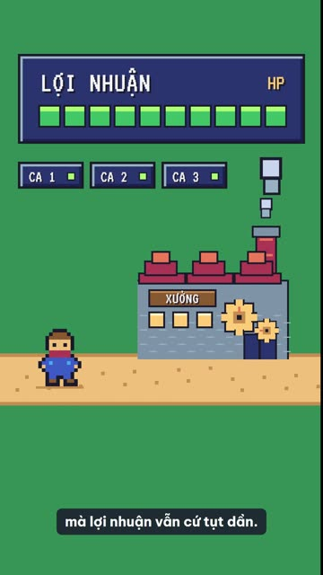
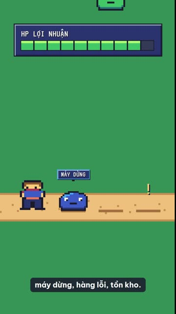
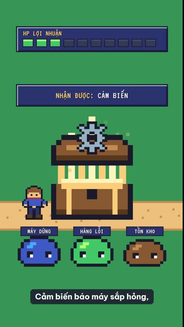
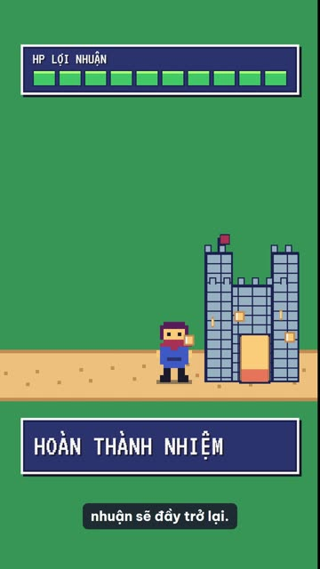

Video mẫu
Một câu yêu cầu, 24 giây phim.
Chủ đề: lãng phí trong sản xuất và AI, khung dọc, style pixel-rpg. Đạo diễn chọn thế giới game nhập vai: thanh HP là lợi nhuận, quái nhầy là lãng phí, AI là rương báu. Bốn cảnh do bốn agent Sonnet dựng cùng lúc.




Vì sao có VideoMotion
Khung cứng làm video rập khuôn.
VideoMotion tách từ MotionFly: giữ phần máy đang chạy tốt (giọng, nhạc, render, phụ đề), thay phần đạo diễn để mỗi video là một câu chuyện riêng.
| MotionFly | VideoMotion | |
|---|---|---|
| Cách nghĩ | Hạn mức cứng: 85% hình, tối đa 30 từ mỗi cảnh, thẻ nào cũng phải có SVG | Ý tưởng lớn, vật xuyên suốt, chuyển động theo động từ của câu; bố cục do người dựng tự nghĩ |
| Style | 43 thẻ tiếng Anh, dài, nhiều luật kỹ thuật | 91 thẻ tiếng Việt ngắn: gu, màu, chữ, chữ ký chuyển động |
| Phông chữ | Chỉ Be Vietnam Pro | Phông riêng của từng style, tải sẵn về dự án |
| GSAP | Bản lõi | Thêm SplitText, DrawSVG, MotionPath, MorphSVG, ScrambleText |
| Agent dựng cảnh | Theo model phiên chính | Sonnet mới nhất, effort medium, chạy song song |
| Kiểm và duyệt | 3 cổng duyệt, tờ duyệt, agent người chấm | 1 cổng duyệt kịch bản, kiểm kỹ thuật, kiểm MP4 một lần |
Quy trình
Bảy bước, AI tự đi hết.
Brief
Chủ đề, khán giả, khung, độ dài, giọng. Chỉ hỏi thứ không đoán được.
Chọn style
Gợi ý ba style: một hợp, một khác nền, một bất ngờ.
Ý tưởng lớn, kịch bản
Một thế giới, một vật xuyên suốt. Cổng duyệt duy nhất, nói "tự làm hết" để bỏ.
Giọng đọc
VieNeu đọc tiếng Việt, Whisper lấy mốc thời gian từng từ.
Phân cảnh
Mỗi hình neo vào đúng từ khóa trong lời đọc.
Nhạc nền
Nhạc tự hạ khi có lời, chuẩn -14 LUFS.
Dựng song song
Mỗi cảnh một agent Sonnet, kiểm kỹ thuật, render, phụ đề, MP4.
Thư viện style
91 style, chép một dòng là xong.
Bấm "Chép" để lấy đúng một dòng như style pixel-rpg, dán vào cuối yêu cầu làm video. Mỗi thẻ ghi bảng màu, phông chữ, ngôn ngữ minh họa và chữ ký chuyển động; bố cục từng cảnh vẫn do AI tự nghĩ.
Cài đặt
Ba lệnh, rồi cứ nói.
Cần Claude Code, Node.js 22 trở lên, Python 3.10 trở lên và ffmpeg. Máy đã chạy MotionFly thì dùng chung môi trường, không tải lại gì; máy mới tải khoảng 2 đến 3 GB (giọng VieNeu, Whisper).
Thêm plugin vào Claude Code
Kiểm tra máy
Báo thiếu gì, rồi tự cài phần Python và model khi anh đồng ý.
Làm video
Codex, Antigravity và công cụ khác: cho đọc skills/videomotion/SKILL.md; không có agent con thì dựng lần lượt từng cảnh theo agents/vm-canh.md.